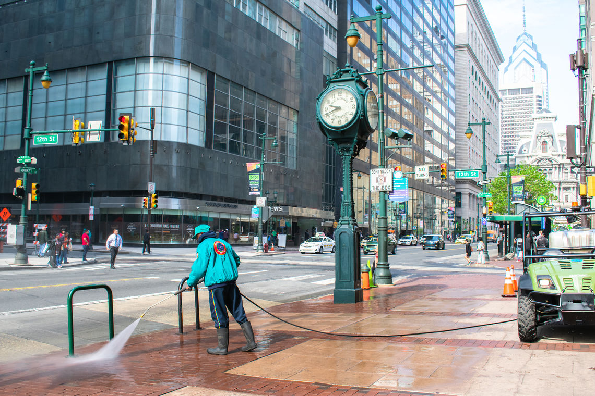
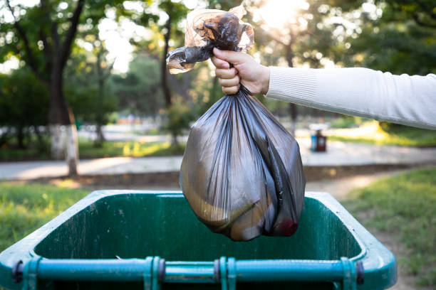
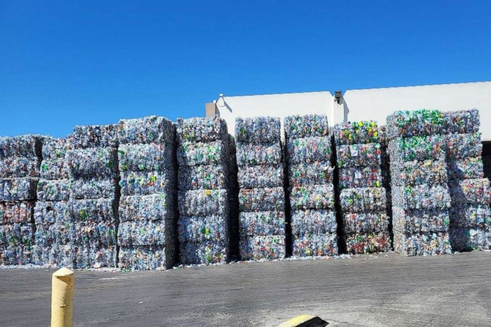

Here at NJ Ecology we strive to make a cleaner and happier New Jersey for all residents. In order to do this we provide information in regards to city services that may otherwise go unnoticed. In addition to this we also provide ways in which you as an individual can make an impact on your community. Below is more information regarding these and if you have any suggestions for us there is a feedback form at the bottom of the page. Now lets make a cleaner New Jersey Together!
|

The impact of clean streetsVarious studies show that clealiness is not only good for ones physical health but for their mental health. Learn more by clicking on the links below |

How you can make a differenceIt all starts with you! Simply throwing out garbage and ensuring theres no spill over is already a big help. If you need help cleaning out a particular land area and are worried about spill over or it simply being too much, you can make contact with the city. Alternatively, you can hire professional cleaners. All necessary links are below |

Onsite LocationsMany cans are not only recyclable but also offer monetary compensation for your efforts. Or if you would like to know where your nearest garbage disposal facility is we also have links for that as well. All of which are provided down below |